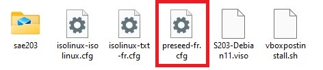
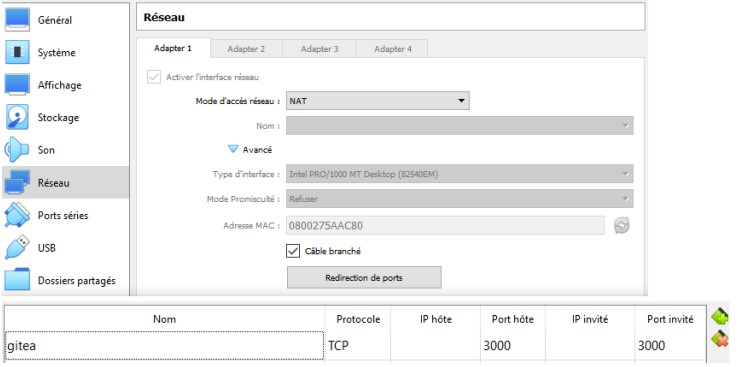
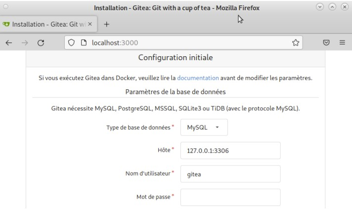
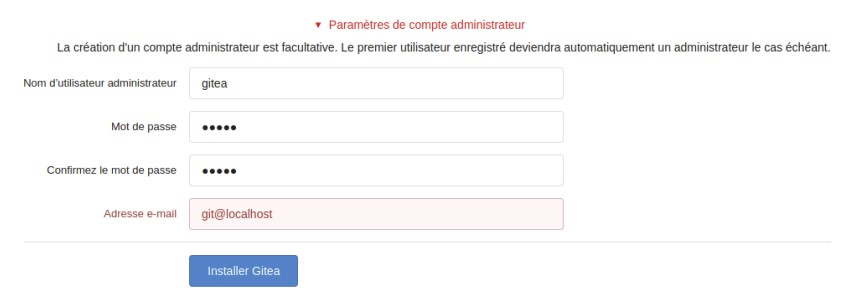

Caractéristiques à respecter lors de la création de la machine virtuelle
Nom de la machine dans VirtualBox : sae203
Dossier de la machine :
/usr/local/virtual_machine/infoetu/login
Type : Linux
Version : Debian ou Debian 11 en 64-bit
Mémoire vive (RAM) : 2048 Mo pour être à l’aise à l’usage.
Disque dur : 20 Go entier (une seule partition)
Laisser le reste par défaut
Question(s) 1. Configuration matérielle dans VirtualBox
Que signifie “64-bit” dans “Debian 64-bit” ?
Les 64 bit signifient l'utilisation d’un processeur de 64 bits
Quelle est la configuration réseau utilisée par défaut ?
La configuration réseau par défaut est de type NAT (Network Address Translation)
Quel est le nom du fichier XML contenant la configuration de votre machine ?
Le fichier XML ne comporte plus l’extension de fichier .xml. Depuis la mise à jour
4.0 de VirtualBox, le fichier se trouvant avant en .xml, est maintenant en .vbox.
Il comporte comme nom, le nom que porte la VM, ainsi, notre fichier se nomme sae203.vbox
et il se trouve dans le fichier de la VM.
Sauriez-vous le modifier directement ce fichier pour mettre 2 processeurs à votre machine ? Faites-le.
Pour modifier le nombre de cœurs de la machine virtuelle, il faut modifier la
ligne 20 du fichier XML. <CPU count=”...”>
Pour mettre deux processeurs a notre machine, il faudra mettre <CPU count=”2”>
1.2Installation de l’OS
Pour cette installation il vous faut d’abord télécharger une iso bootable d’une installation de Debian 11, pour ce faire vous la trouverez sur le site officiel de Debian. Par la suite il vous faudra utiliser l’interface graphique de Virtualbox et insérer le fichier iso d’installation de votre Debian que vous venez de télécharger dans le cdrom virtuel.
Vous pouvez maintenant allumez votre machine virtuelle et commencez l’installation de votre OS avec les informations ci-dessous.
Partition : 1 seule partition recouvrant le disque entier
Sélection des logiciels de démarrage (Paquetages logiciels à préinstaller pour se simplifier la vie par la suite) :
Grub
environnement de bureau Debian
MATE (penser à décocher Gnome)
serveur web
serveur ssh
utilitaire usuels du système
En cas de soucis avec l’installation, vous pouvez vous référer à la section de la documentation Debian qui détaille la procédure : guide Debian.
Conseil
À la fin de la procédure d’installation, avant de relancer le système, assurez-vous que le lecteur optique soit vide (icône grisé en bas de la fenêtre de votre VM) sinon vous redémarrerez sur l’iso d’installation.
Une fois l’installation terminée, vouspouvez supprimer l’iso d’installation pour économiser de l’espace usr votre compte.
Question(s) 2. Installation OS de base
Qu’est-ce qu’un fichier iso bootable
Un fichier iso bootable est un fichier d’installation permettant la procédure
d’installation lors du lancement de l’ordinateur.
Qu’est-ce que MATE ? GNOME ?
MATE (prononcer maté à l'espagnole) est un environnement de bureau libre
utilisant (dans un premier temps) la boîte à outils GTK+ 3. x et destiné
aux systèmes d'exploitation apparentés à UNIX.
GNOME est un environnement graphique pour plateformes GNU /Linux et Unix.
Projet démarré en 1997, il est un ensemble d'outils permettant d'exploiter
graphiquement votre ordinateur : gestionnaire de fichiers, utilitaires,
logithèque, clients mail, navigateur web, logiciels divers, etc.
Qu’est-ce qu’un serveur web ?
Un « serveur web » peut faire référence à des composants logiciels (software)
ou à des composants matériels (hardware) ou à des composants logiciels et
matériels qui fonctionnent ensemble.
1. Au niveau des composants matériels, un serveur web est un ordinateur qui
stocke les fichiers qui composent un site web (par exemple les documents HTML,
les images, les feuilles de style CSS, les fichiers JavaScript) et qui les envoie
à l'appareil de l'utilisateur qui visite le site. Cet ordinateur est connecté à
Internet et est généralement accessible via un nom de domaine tel que mozilla.org.
2. Au niveau des composants logiciels, un serveur web contient différents fragments
qui contrôlent la façon dont les utilisateurs peuvent accéder aux fichiers hébergés.
On trouvera au minimum un serveur HTTP.
Qu’est-ce qu’un serveur ssh ?
SSH est un protocole permettant d'établir une communication chiffrée, donc
sécurisée (on parle parfois de tunnel), sur un réseau informatique (intranet ou
Internet) entre une machine locale (le client) et une machine distante (le serveur).
Qu’est-ce qu’un serveur mandataire ?
Pour une définition du mot " proxy ", voir l'article proxy du Wiktionnaire.
Un serveur mandataire ou proxy (de l'anglais) est un serveur informatique
qui a pour fonction de relayer des requêtes entre un poste client et un serveur.
Les serveurs mandataires sont notamment utilisés pour assurer les fonctions suivantes:
- mémoire cache ;
- la journalisation des requêtes (" logging ") ;
- la sécurité du réseau local ;
- le filtrage et l'anonymat.
L'utilité des serveurs mandataires est importante, notamment dans le cadre
de la sécurisation des systèmes d'information.
2Préparation du système
2.1Accès sudo pour user
L’accès au groups sudo va nous permettre de simplifier la gestion du système, cependant en temps réél ce n’est pas obligatoire et peut même être considéré comme une fragilité
Suivez ces étapes :
Passer en mode console : Ctrl + Alt + F1 (si cela vous met en pleine écran, vous n’êtes pas dans la console de la machine virtuelle)
Se connecter en root : login = root et mot de passe = root Ajouter le groupe sudo à votre principal (pensez à indiquer dans le rapport la commande utilisée pour faire cette action) Recharger votre session. Vous pouvez maintenant utiliser la commande sudo avec le compte user.
Question(s) 3. sudo
Comment peux-t-on savoir à quels groupes appartient l’utilisateur user ?
Premièrement, on peut trouver le groupe auquel appartient l'utilisateur
user dans le fichier /etc/group.
Deuxièmement, on peut utiliser la commande groups afin de connaître le(s)
groupe(s) de l'utilisateur courant (si aucun nom d'utilisateur n'est mis
derrière la commande).
2.2Installation des suppléments invité
Pour ajouter les suppléments invités, nous allons devoir compiler des programmes. Il nous faut donc des outils de compilation et les fichiers d’en-têtes du noyaux linux utilisé :
Suivez ces étapes :
Insérer le cd des suppléments : Périphériques › Insérer l’image CD des additions invités…
Addition invité
Monter le cd
sudo mount /dev/cdrom /mnt
Installer les suppléments
sudo /mnt/VBoxLinuxAdditions.run
Rebooter et connecter-vous avec le compte user pour prendre en compte les suppléments.
Votre machine est maintenant prête pour une utilisation confortable
Question(s) 4. Suppléments invités
Quel est la version du noyau Linux utilisé par votre VM ? N’oubliez pas, comme pour toutes les questions, de justifier votre réponse.
Grâce à la commande : cat /proc/version
Nous pouvons savoir la version de linux utiliser par la VM. Celle ci est
la version 5.10.0-21-amd64
À quoi servent les suppléments invités ? Donner 2 principales raisons de les installer.
Les additions invitées améliorent les performances du système d'exploitation
invité et permettent une meilleure interaction entre la machine hôte
et la machine invitée.
À quoi sert la commande mount (dans notre cas de figure et dans le cas général) ?
La commande mount permet de demander au système d'exploitation de rendre
un système de fichiers accessible, à un emplacement spécifié.
2.3Précision sur le Proxy
De manière générale, vous aurez à utiliser un proxy quand vous êtes au sein de l’université et pas à l’extérieure. En fait vous pourriez tout à fait utiliser un proxy tout le temps mais pas toujours celui de l’université (pour des raisons de sécurité, de traçage des données en transit …). Détaillons plusieurs situations :
À l’installation : Vous l’avez déjà fait dans le chapitre précédent.
Pour un logiciel particulier : Certains logiciels peuvent gérer eux-même un proxy pour leur propre usage. Voici quelques exemples
apt > Le proxy se place dans le fichier /etc/apt/apt.conf ou dans le répertoire /etc/apt/apt.conf.d/ (avec un fichier de nom quelconque). C’est ce qui est utilisé lors de l’installation de base. Le contenu doit bien sûr respecter un format particulier : Acquire::http::proxy "http://cache.univ-lille.fr:3128";. > > Détails ici : Options de configuration apt
git > La commande git peut elle aussi utiliser un proxy spécifique qui pourra être placé par exemple dans la configuration globale avec la commande git config --global http.proxy ou directement dans le fichier `~/.gitconfig section [http). > > Détails ici : it paramètre http.proxy.
Pour une configuration générale :
Terminal (v1) : Via les variables d’environnement du terminal :
> export http_proxy=http://cache.univ-lille.fr:3128 > > export https_proxy=$http_proxy
Terminal (v2) : Ajouter la ligne précédente dans votre fichier $HOME/.bashrc afin d’éviter d’avoir à la saisir à chaque fois. Pour désactiver le proxy, dans les deux cas il vous suffit d’écrire : unset http_proxy en ligne de commande.
Via MATE : La configuration se trouve dans le menu “Système › Préférences › Internet et réseau › Serveur mandataire”. Mettez la même url pour HTTP et HTTP sécurisé.
Pour le désactiver, il vous suffira de cocher l’option “Connexion directe à Internet” au même endroit
2.4Référence
Questions 1. Configuration matérielle dans VirtualBox
3Installation Debian automatisée par préconfiguration
3.1À propos de la distribution Debian
Qu’est-ce que le Projet Debian ? D’où vient le nom Debian ?
Le projet Debian est un groupe mondial de volontaires qui s'efforcent
de produire un système d'exploitation qui soit composé exclusivement
de logiciels libres. Le principal produit de ce projet est la distribution
Debian GNU/Linux, qui inclut le noyau Linux ainsi que des milliers
d'applications pré empaquetées.
La prononciation officielle de Debian est « déb-yann ». Le nom tire son origine
des prénoms du créateur de Debian, Ian Murdock, et de son épouse, Debra.
Ian Murdock
3.2La maintenance
Il existe 3 durées de prise en charge (support) de ces versions : la durée minimale, la durée en support long terme (LTS) et la durée en support long terme étendue (ELTS). Quelles sont les durées de ces prises en charge ?
Debian Long Term Support (LTS), pour prise en charge à long terme,
est un projet pour étendre la durée de vie de toutes les versions
stables de Debian à (au moins) 5 ans. Debian LTS n'est pas gérée
par l'équipe chargée de la sécurité de Debian, mais par un groupe
distinct de bénévoles et sociétés intéressées pour en faire un succès.
La prise en charge à long terme étendue (ELTS) est une offre commerciale
offrant un prolongement de la durée de vie de 10 ans des versions
de Debian (c'est-à-dire de 5 ans après la prise en charge de 5 ans
offerte pas le projet LTS). Il ne s'agit pas d'un projet officiel
de Debian. L'infrastructure de Debian, et les autres ressources
de Debian ne sont pas impliquées.
Pendant combien de temps les mises à jour de sécurité seront-elles fournies ? Nom générique, nom de code et version
L'équipe Debian LTS prendra en charge les mises à jour de sécurité des
différentes versions une fois que l'équipe chargée de la sécurité aura
terminé son travail.
3.3Nom générique, nom de code et version
Combien de versions au minimum sont activement maintenues par Debian ? Donnez leur nom générique (= les types de distribution).
Il y a toujours au moins trois versions qui sont activement maintenues par debian:
- La distribution stable contient la dernière distribution
officiellement sortie de Debian.
- La distribution testing contient les paquets qui n'ont pas encore
été acceptés dans la distribution stable, mais qui sont en attente de
l'être. Le principal avantage d'utiliser cette distribution est qu'elle
contient des versions plus récentes des logiciels.
- La distribution unstable est celle sur laquelle les activités de
développement se déroulent. Généralement, cette distribution est utilisée
par les développeurs et par ceux qui aiment vivre sur le fil.
Chaque distribution majeur possède un nom de code différent. Par exemple, la version majeur actuelle (Debian 11) se nomme Bullseye. D’où viennent les noms de code données aux distributions ?
Les versions successives de la distribution Debian portent à la fois un
numéro de version traditionnel et des noms de code tirés des personnages
du film Toy Story de Pixar/Disney (1995)
L’un des atouts de Debian fut le nombre d’architecture officiellement prises en charge. Combien et lesquelles sont prises en charge par la version Bullseye ?
La version Bullseye prend en charges 9 architecture différentes :
- PC 64 bits (amd64)
- ARM 64 bits (AArch64)
- EABI ARM (armel)
- ARM avec unité de calcul flottant (armhf)
- PC 32 bits (i386)
- MIPS (petit-boutiste)
- MIPS 64 bits (petit-boutiste)
- PowerPC 64 bits (petit-boutiste)
- System z
Première version avec un nom de code
Quelle a était le premier nom de code utilisé ?
Quand a-t-il été annoncé ?
Quelle était le numéro de version de cette distribution ?
Dernière nom de code attribué
Quel est le dernier nom de code annoncée à ce jour ?
Pendant combien de temps les mises à jour de sécurité seront-elles fournies ?
Combien de version au minimum sont activement maintenues par Debian ? Donnez leur nom générique (=les types de distribution).
Chaque distribution majeur possède un nom de code différent. Par exemple, la version majeur actuelle (Debian 11) se nomme Bullseye. D’où viennent les noms de code données aux distributions ?
Après avoir récupérer l’archive autoinstall.zip et l’avoir decompresser dans notre machine virtuelle
Remplacer la chaîne @@UUID@@ par un identifiant unique universel. Le plus simple est d’exécuter la commande ci-dessous en étant placé dans le même répertoire que votre fichier S203-Debian11.viso. .
sed -i -E "s/(--iprt-iso-maker-file-marker-bourne-sh).*$/\1=
$(cat /proc/sys/kernel/random/uuid)/" S203-Debian11.viso
Insérer le fichier S203_Debian11.viso dans le lecteur optique (cd/dvd) de votre machine virtuelle
Démarrer la machine virtuelle et laissez l’installation se dérouler jusqu’au reboot.
Testez les ajouts invités en vous connectant (user/user, ou root/root) puis en modifiant la taille de la fenêtre
Votre installation est pour le moment sans interface graphique.
Question(s) 1.Ajustement de la pré-configuration
Pour repondre aux différentes demandent nous allons devoir modifier le fichier preseed-fr.cfg 
A l’aide du guide de pré-configuration d’une Debian Bullseye, nous avons pu modifier correctement le fichier.
Nous y avons modifier la ligne 56 qui était :
d-i passwd/user-default-groups string audio cdrom video
Pour y ajouter :
d-i passwd/user-default-groups string audio cdrom video sudo
Celle-ci va servir à ce que l’utilisateur user est les droits sudo dès la fin de la configuration.
Pour l’installation de l’environnement MATE, nous avons modifier la ligne 83 qui était :
tasksel tasksel/first multiselect standard ssh-server
Pour devenir:
tasksel tasksel/first multiselect standard ssh-server mate-desktop
Pour ce qui est de l’installation des différents paquets nous avons ajouter les
Une fois le fichier modifié, vous pouvez lancer votre VM et n’avez plus rien à faire. Une fois l’installationn finit, l’identifiant et le mot de passe de l’utilasteur
Nom d'utisateur : user
Mot de passe : user
Pour finir l’installation des différents paquets que nous avons ajouter lors de la modification du preseed-fr.cfg, il vous suffit de taper les commandes:
Par exemple pour installer sqlite3sudo apt-get update sudo apt-get install sqlite3
4Gitea
Nous considérons que les étapes précédentes sont réalisées. Vous avez donc une machine virtuelle avec une Debian 11.6 avec au moins mate-desktop, git, et sqlite3 installés (et quelques autres paquets).
4.1Configuration de globale de git
Configurons quelques paramètres pour le logiciel git sur votre compte utilisateur.
Ouvrez un terminal et effectuez les commandes suivantes :
git config --global user.name "Prénom Nom"
git config --global user.email "votre@email"
git config --global init.defaultBranch "master"
En remplacant 'Prenom Nom' et 'votre@email' par la votre bien sur ;)
Puis, installez le paquet git-gui.
Question(s) 1.preliminaire - Qu’est-ce que le logiciel git-gui ? Comment se lance-t-il ?
Git Gui est l'interface graphique d'un outil en ligne de commande.
De ce fait, toutes les possibilités offertes par Git ne sont pas
disponibles dans Git Gui.
Pour lancer git-gui, il faut lancer un terminal et se déplacer dans
le dossier ou se trouve le '.git'. Pour être sur qu'il est bien présent
vous devez taper 'ls -a' dans votre terminal. Une fois dans le bon
dossier a partir de votre termianl, il vous suffit juste de taper la commande:
git gui
Interface de git gui
Même question mais pour gitk
gitk est un navigateur de dépôt graphique. Il permet d'explorer et
de visualiser l'historique d'un dépôt.
Pour lancer gitk, c'est exactement la même chose que pour git-gui.
Il faut lancer un terminal et se déplacer dans le dossier ou se trouve
le '.git'. Pour être sur qu'il est bien présent vous devez taper 'ls -a'
dans votre terminal. Une fois dans le bon dossier a partir de votre
termianl, il vous suffit juste de taper la commande:
gitk
Interface de gitk
Quelle sera la ligne de commande git pour utiliser par défaut le proxy de l’université sur tous vos projets git ?
Question(s) 1.preliminaire 1.1 Qu’est-ce que le logiciel git-gui ? Comment se lance-t-il ? 1.2 Mêmes questions avec gitk. 1.3 Quelle sera la ligne de commande git pour utiliser par défaut le proxy de l’université sur tous vos projets git ?
Avant de se lancer dans l’installation de Gitea proprement dites, vous aurez besoin d’ouvrir des ports d’accès sur votre machine virtuelle.
4.1.2Accéder au port 3000
Le service Gitea est un service web et utilise par défaut sur le port 3000 de la machine sur lequel il est démarré. Il n’est donc pas nécessaire d’être root pour le démarrer (mais il faut être root pour l’installer).
Vous allez voir comment rediriger les messages arrivant sur le port 3000 de la machine physique vers le port 3000 de la machine virtuelle.
Tous les détails se trouvent ici : https://www.virtualbox.org/manual/UserManual.html#networkingdetails
Le mode réseau par défaut de vos machines virtuelles est le mode NAT. Il permet de faire la redirection dont nous avons besoins ici. Sur votre VM, on peut ajouter avec l’interface graphique (faites-le) les redirections de port comme indiqué sur la figure ci-dessous :
Configuration réseaux
4.2Installation de Gitea
Tout d’abord, renseignons-nous sur le service Gitea.
Question(s) 2. À propos de Gitea
Qu’est ce que gitea ?
Gitea est une forge logiciel libre à source ouverte et une bifurcation de Gogs.
C'est un logiciel écrit en Go et une alternative auto-hébergeable à Github qui
se veut plus légère que Gitlab tant en terme de consommation de ressources
qu'en fonctionnalités.
Le Go, ou Goulang est un langage de programmation compilé et concurrent
inspiré de C et Pascal. Il a été développé par Google à partir d'un concept
initial de Robert Griesemer, Rob Pike et Ken Thompson.
https://docs.gitea.io/fr-fr/
gitea
À quels logiciels bien connus dans ce domaine peut-on le comparer (en citer au moins 2) ?
Il est similaire à GitHub et GitLab
Vous avez pu remarquer que l’installation d’un logiciel en utilisant un paquet Debian était très simple. Malheureusement, il n’existe pas encore de paquet Debian officiel pour ce logiciel.
Malgré l’absence de paquet Debian, l’installation de Gitea est assez simple via de multiples solutions décrites dans la documentation : https://docs.gitea.io (compilation des sources, récupération d’un binaire pré-compilé, via Docker …) ou encore via des scripts non officiels
Toujours se fier à la documentation officielle
plutôt qu’à n’importe qu’elle autre documentation qui pourrait :
Ne pas être à jour : OS en version différente, dépendances modifiées depuis l’écriture du script, logiciel modifié… (tout cela peut entraîner des changements parfois conséquents)
Donner des indications relatives à une installation particulière mais dont les information ne sont pas indiquées (configuration par défaut non indiquée par l’auteur du blog donnant les indications par exemple)
Posséder des erreurs parfois simples à corriger, mais difficiles à repérer (des commandes inutiles ou inexactes, des paquets inutiles…),
Nous allons donc éviter les scripts non officiels.
4.2.1Installons de Gitea
Nous allons installer un binaire pré-compilé.
4.2.2Installation du binaire
Pour ce faire, nous suivres les 4 premières étape de l’installation : https://docs.gitea.io/en-us/install-from-binary/ en respectant les contyraintes particulières suivantes :
La version du binaire pré-compilé à installer est la version 1.18.5
Base de données : nous utiliserons sqlite3²
Pour vous simlplifier l’installation, l’utilisateur qui lancera Gitea sera le même que dans les documentations
² Si vous n’avez pas installer sqlite3, il vous suffit de taper les commandes suivantes dans un terminal
sudo apt-get update sudo apt-get install sqlite3
Maintenant nous allons passer aux différentes étapes à faire pour l’installation de gitea
Commencer par copier ces commandes dans votre terminal
Ensuite nous passons à la configuration du repertoire de travail Gitea avec la commande suivante :
exportGITEA_WORK_DIR=/var/lib/gitea/
Et pour finir il suffit de copier le binaire de Gitea dans un emplacement global
cp gitea /usr/local/bin/gitea
4.2.3Démarrage automatique du service
Nous souhaitons que Gitea soit lancé automatiquement à chaque démarrage.
Pour commencer copiez l’exemple de gitea.service dans
/etc/systemd/system/gitea.service
Puis éditez le fichier avec votre éditeur préféré. Décommentez tout service qui doit être activé sur cet hôte, par exemple MySQL:
Wants=mysql.serviceAfter=mysql.service
Modifiez l’utilisateur, le répertoire personnel et les autres valeurs de démarrage requises. Modifiez le PORT ou supprimez le drapeau -p si le port par défaut est utilisé.
Vous pouvez maintenant activer et démarrer Gitea, au démarrage :
Si vous avez la version 220 de systemd ou une version ultérieure, vous pouvez activer et démarrer immédiatement Gitea en procédant comme suit :
sudo systemctl enable gitea --now
tips
4.2.4Premier lancement : paramétrage de Gitea
Une fois l’installation du binaire effectué, il faut passer au paramétrage du service lui-même. Cela peut se faire en créant et modifiant certains fichiers de configuration, mais cela peut aussi se faire via un navigateur web
Vous vous rappelez sûrement que nous avons ouvert le port 3000 sur votre machine virtuelle. Nous allons profiter de cette étape de paramétrage pour vérifier que cela fonctionne.
Suivez cette procédure : 1. Verifier que le service est bien démarré
$ systemctl status gitea.service
Utilisez le navigateur de votre machine physique pour vous rendre sur l’url : http://localhost:3000. Normalement, vous devriez voir quelque chose de semblable à la photo ci-dessous.
Port 3000
Si cela ne fonctionne pas, il faut retourner voir la Section 1.2.
Et si vraiment vous n’y arrivez pas, vous pouvez toujours utiliser le navigateur de la machine virtuelle (mais c’est dommage).
Il est temps de modifier le paramétrage de Gitea.
Voici les informations nécessaires :
La base de données sera SQLite3
Le compte administrateur web[3] sera :
Nom : gitea
Password : gitea
Email : git@localhost
Parametre Gitea
N’oubliez pas non plus de protéger /etc/gitea et /etc/gitea/app.ini comme indiqué dans la documentation à la fin de l’installation web.
Question(s) 3. Mise à jour - Comment faire pour la mettre à jour sans devoir tout reconfigurer ?
Avant de commencer votre mise à jour veuillez désactiver Gitea avec la commande suivante :
systemctl stop gitea
Ensuite soyez sur d’avoir effectuer une copie du fichier app.ini dans un emplacement sûr.
Maintenant il vous faut télécharger la dernière version de Gitea, ensuite il vous suffit de remplacer le nouveau fichier app.ini par le fichier précédemment sauvegarder dans votre dossier sûr.
Pour finir il suffit de réactiver Gitea :
systemctl start gitea
4.3Utilisation basique
Réalisez l’ajout de plusieurs projets
Un projet directement créé depuis l’interface web de Gitea
Vos rapports sur cette saé
Vos codes sources de TP et projets dans les ressources de développement (ceux des membres de vos équipes des autres projets)